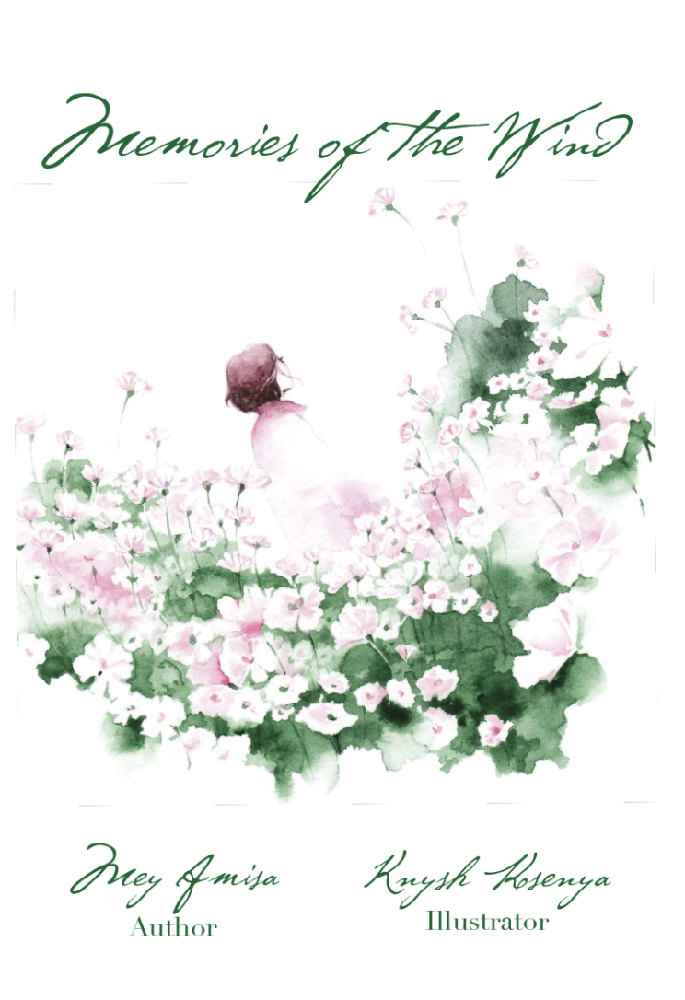

Book Collaboration
KNYSH KSENYA AND MEY AMISA

About Us
Knysh Ksenya and Mey Amisa have collaborated for over seven years, bringing together their distinct storytelling approaches through illustration and text. Their creative partnership began on Instagram while working on Phantom of Fukushima, growing into a deep bond of trust and artistic exchange.
In 2023, they launched Kotoba to Suisai, a series combining Amisa's words with Ksenya's watercolor art. This exhibition presents Reflection, a collection of fifteen expressive watercolor works where Ksenya allows emotion to guide process, inviting viewers to interpret their own feelings, dreams, and identities.
Their work has been exhibited internationally, including at Punio Gallery in 2024 and Studio Kan in December 2024.
As part of this exhibition, Amisa presents three books from the Kotoba to Suisai series, all connected through the theme of reflection. Together, their works create a space where image and language meet, offering visitors a moment of pause, introspection, and emotional connection.
Phantom of Fukushima
Kotoba to Suisai
Book mockup and inside preview section.

Memories of the Wind
Book mockup and inside spread.
